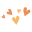

Congratulations!
You're a real problem solver.

I hope you had a challenging,
but rewarding time in the program. Regardless of what
happens after the completion of the course, I hope
that you are able to use the skills you've gained
in your future career or opportunities.
I enjoyed having you all in my PEP cohort.
It was a learning experience for me too!
Best,
Cynthia
